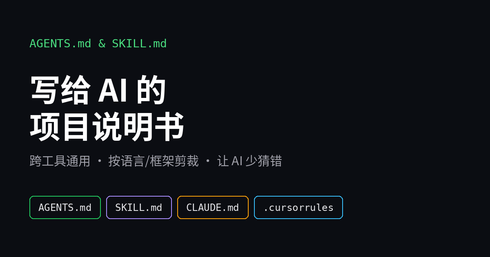
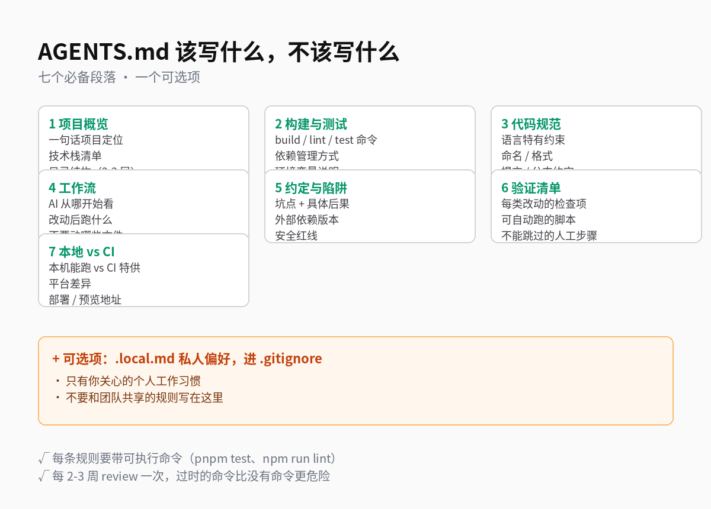
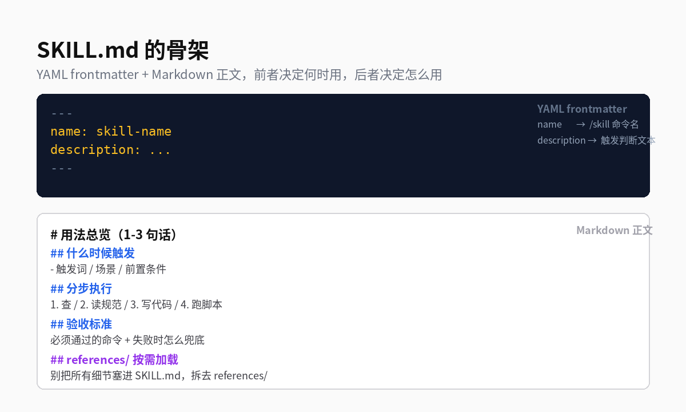
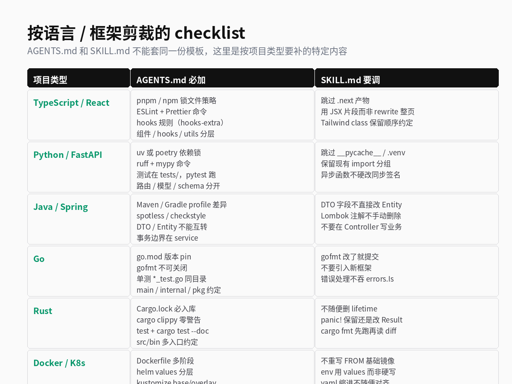

我手上一个中型仓库，最近把 AI 写代码的效率从"每两三次就要回滚一次"拉到了"80% 直接提交"。没换模型，没换工具，只多了两样东西：
· 一份 AGENTS.md，放在仓库根目录，跨工具通用
· 三份 SKILL.md，分别管"写前端组件""写 FastAPI 路由""写 SQL 脚本"
这篇写的就是这两样东西到底该写什么、不该写什么、以及不同语言/框架的剪裁版本。
01
先把三件事分清
这两年出现了一堆文件名：CLAUDE.md、AGENTS.md、GEMINI.md、.cursorrules、.github/copilot-instructions.md。名字不一样，来源不一样，但它们在做同一件事：告诉 AI，这个仓库的规则是什么。
写的时候先分清这三层，不要混在一起：
| 层级 | 典型位置 / 文件名 | 写什么 |
| L1 · 项目说明书 | AGENTS.md（Codex、Copilot、Gemini 都认） |
这个仓库怎么 build、怎么 test、目录结构是什么、不能碰什么。跨工具通用，提交到仓库。 |
| L2 · 个人偏好 | ~/.claude/CLAUDE.md.claude/CLAUDE.local.md |
只有你关心的事："提交信息写中文"、"优先用 Python 3.12"。不入库，进 .gitignore。 |
| L3 · 专项技能 | skills/xxx/SKILL.md |
某一类任务的完整 SOP："写 React 组件"、"写 SQL 迁移"、"跑端到端测试"。可以入库给团队共用。 |
一件很重要的事：别把 L1 写成 L2。"我们这个仓库用 pnpm 锁定依赖"是 L1，"我个人觉得 pnpm 好"是 L2。前者要提交，后者进 .gitignore。混着写，同事的 AI 看到你的个人偏好也会被污染。
跨工具兼容性上，AGENTS.md 是目前最接近"单一信源"的做法——Codex CLI、Copilot 自定义指令、Cursor 的指令模式、Gemini CLI 都在读它。只有 Claude Code 还主推 CLAUDE.md，但也兼容 AGENTS.md。
02
AGENTS.md 该写什么，有骨架吗
我见过最差的 AGENTS.md 是一句"Write clean code"。
模型读了之后，"clean code"这个词会触发一批训练数据里的默认行为：加注释、拆小函数、用更多抽象。结果是我的 FastAPI 路由从 40 行被拆成了 5 个 service 层方法，每个方法只有一行，读起来更累。
AGENTS.md 的正确姿势是给模型具体命令，不是给它审美口号。下面是我自己用下来最稳的七段骨架：

七个必备段落，再加一个可选项
逐个展开，说清楚每段该写什么、不该写什么。
§1 项目概览：一句话定位 + 技术栈清单 + 目录 2-3 层。技术栈要精确到版本："FastAPI 0.115+ / SQLModel 0.0.22"，不要只写"Python Web 后端"。目录只列顶层，让 AI 知道去哪找东西，不要把整个树贴进去——读不完。
§2 构建与测试：这是最重要的一段，每条都要可执行。不要写"运行测试"，写 pnpm test:unit。依赖管理方式也要写清楚："poetry 锁版本，pip-tools 不允许"；环境变量写最少那几个："只需要 DATABASE_URL，本地用 sqlite"。
§3 代码规范：语言特有约束。TypeScript 写"hooks 必须用 hooks-extra 的 exhaustiveness 规则"；Java 写"DTO 和 Entity 禁止互转，用 MapStruct"；Go 写"gofmt 不可关闭"。提交和分支约定写清楚："commit 信息中文，feat/xxx 分支"。
§4 工作流：告诉 AI 从哪开始看、改完跑什么、不要动哪些文件。"改动路由先看 tests/routers/test_user.py 的 fixture"、"不要动 migrations/ 里已合并的迁移文件"、"前端改完跑 pnpm lint --fix"。
§5 约定与陷阱：把你踩过的坑写进去，每条带具体后果。"用户表 id 是 Snowflake 生成，别改成自增 int——会炸下游"、"这个 Redis 是 pub/sub 用的，别当 cache 用——TTL 设了会丢消息"。
§6 验证清单：每类改动的检查项。"改接口契约 → 跑 openapi 生成 → 更新前端 types"、"改数据库 schema → 写 Alembic 迁移 → 跑 data migration 脚本 → 跑集成测试"。
§7 本地 vs CI：平台差异。"本机能跑 docker compose up 启动数据库，CI 用 Testcontainers"、"部署地址：staging 是 x，production 是 y，预览环境自动挂 pull request 上"。
再加一段 AGENTS.local.md，只有你关心的个人偏好："提交信息用中文"、"优先用 Python 3.12 语法"。这段进 .gitignore，不要提交。
一条黄金准则：过时的命令比没有命令更危险。AI 照着跑旧的 npm run build-old 只会产出空产物。AGENTS.md 每两三个礼拜过一遍，过期的命令、废弃的工具链、换掉的规范，清掉。
03
SKILL.md 怎么写，骨架是什么
AGENTS.md 是项目说明书，SKILL.md 是某一类任务的完整 SOP。
区别在哪？AGENTS.md 是"这个仓库的通用规则"；SKILL.md 是"写 React 组件时按这个流程走"。前者每仓库一份，后者可以全团队共用，甚至跨仓库复用。
每个 skill 就是一个目录，SKILL.md 是必需文件，其他都是可选：
skill-name/
├── SKILL.md 必需：YAML frontmatter + 正文指令
├── scripts/ 可选：可执行脚本，被正文引用
├── references/ 可选：详细手册 / 规范，按需加载
└── assets/ 可选：模板、字体、图标等输出资源

SKILL.md 分两段：YAML 决定何时触发，Markdown 决定执行方式
YAML frontmatter 是第一段，写在文件最开头、两个 --- 之间。它决定两件事：这个 skill 叫什么（变成 /skill 命令），以及模型什么时候觉得该用它。
---
name: react-component
description: >-
在现有项目里新增或修改一个 React 组件。
当用户要求新建 / 重构 / 优化 React 组件、
Hooks、或 Tailwind 样式时使用。不适用于写新页面路由。
---
description 里要写触发词 + 适用场景 + 明确排除项。"不适用于写新页面路由"这半句很重要——它告诉模型什么时候别用这个 skill，减少误触发。
Markdown 正文是第二段。官方文档建议的骨架：
· 用法总览：1-3 句话，这个 skill 解决什么问题。
· 什么时候触发：触发词 / 场景 / 前置条件（"项目里必须有 tailwind.config.js"）。
· 分步执行：顺序很重要，一步步写。
· 验收标准：必须通过的命令 + 失败兜底。
· references/ 按需加载：别把所有细节塞进 SKILL.md，拆去 references/。正文里告诉模型"遇到 X 时读 references/y.md"。
渐进式披露是官方强调的设计原则：SKILL.md 本身保持精简，引用才加载 references。这样模型读 skill 的时间花在理解主流程，细节需要时才展开，节省 token。
skill 的放置位置也有讲究：
| 位置 | 作用域 | 提交 |
~/.claude/skills/ |
你所有项目 | 不提交 |
.claude/skills/ |
当前项目 | 建议提交 |
.agents/skills/ |
跨工具通用 | 建议提交 |
Codex 让它自己装：
$skill-installer install https://github.com/you/your-skills/tree/main/skills/react-component
SKILL.md 会被自动发现，放在仓库根目录或上层目录也行，monorepo 子目录会优先读最近那一层的 skill。
04
跨语言、跨框架的剪裁
有了骨架之后，真正见功力的是"不同项目要补什么"。上面那张图给出一个速查表，下面逐个展开。

不同项目类型的剪裁 checklist
TypeScript / React / Next.js
AGENTS.md 必加：pnpm / npm 锁文件策略（node_modules 不入库、lock 要 pin）；ESLint + Prettier 具体命令；hooks 规则（hooks-extra 的 exhaustiveness）；组件 / hooks / utils / types 的分层约定；Next.js 的 app router 约定（不要 pages/）。
SKILL.md 要调：让模型跳过 .next/ 产物；写组件时返回 JSX 片段而非重写整页；Tailwind 的 class 不要随便重排（Prettier 会按字母排，但改它会让 diff 膨胀）。
特别注意：不要让 AI 引入新状态管理库，除非你在 AGENTS.md 里明确说"可以加 xstate"。默认它会在 zustand、jotai、redux 里轮流推荐。
Python / FastAPI
AGENTS.md 必加：uv 或 poetry 的锁版本命令；ruff + mypy 必须零警告；测试文件在 tests/、和源码分开（pytest 的约定）；路由 / 模型 / schema 分层。
SKILL.md 要调：让模型跳过 __pycache__/ 和 .venv/；保留现有 import 分组（isort 的约定）；不要把 async 函数硬改成 sync。
特别注意：AI 很爱引入 Pydantic model 做"校验器"——如果你们团队用的是 SQLModel 或 schema 独立文件，一定在 AGENTS.md 里明确说"不要新建 Pydantic BaseModel，用 X"。
Java / Spring Boot
AGENTS.md 必加：Maven / Gradle 的 profile 差异（local vs ci vs prod）；spotless / checkstyle 命令；DTO 和 Entity 不能互转（用 MapStruct 或手动）；事务边界在 service 层、不要在 controller 里开 @Transactional。
SKILL.md 要调：DTO 字段改动要同步改 Entity 映射；不要让 AI 手动删除 Lombok 注解（它会觉得"没用的 @Getter 删掉更干净"）；Controller 里不要写业务逻辑（这个 AI 犯得最多）。
Go
AGENTS.md 必加：go.mod 版本 pin；gofmt 不可关闭（Go 生态所有人都用，关了 diff 就炸）；单测文件同目录（xxx_test.go 和 xxx.go 在同一目录）；main / internal / pkg 约定。
SKILL.md 要调：gofmt 改了就提交，别让它单独跑；不要引入新框架（Go 生态鼓励标准库 + 少依赖，AI 爱瞎加）；错误处理别用 errors.Is 之外的比较（AI 有时会改成字符串匹配）。
Docker / K8s / 基础设施
AGENTS.md 必加：Dockerfile 多阶段说明（哪些阶段是 prod 用的、哪些是 dev）；Helm values 分层（base / staging / prod）；Kustomize base/overlay 结构；镜像 tag 规范（commit sha 还是 semver）；密钥存哪、不要存哪（Secrets Manager vs .env.local）。
SKILL.md 要调：不要重写 FROM 基础镜像（AI 可能换成更"酷"的 Alpine）；env 用 values 传入不要硬写；YAML 缩进别让它随便对齐（kubectl apply 对空格敏感）；Helm chart 改完必须跑 helm template 验证输出。
05
开始写，给你两份可以抄的模板
下面两份是我自己在用的，直接改字段就能用。
# AGENTS.md — 项目级 AI 说明（跨工具通用）
## 项目概览
一句话定位：[比如 "多租户 SaaS 后端"]
技术栈：FastAPI 0.115+ / SQLModel 0.0.22 / PostgreSQL 16 / Redis 7
目录：
app/ — 路由、模型、schema
tests/ — pytest 集成测试
migrations/ — Alembic 迁移
## 构建与测试
poetry install && poetry shell
ruff check app/ && ruff format --check app/
mypy app/
pytest tests/ -x
## 代码规范
DTO 和 Entity 禁止互转
异步函数签名不硬改同步
commit 信息中文，feat/xxx 分支
## 工作流
改动先看 tests/ 里最相似的 fixture
不要动 migrations/ 已合并的文件
改完必须跑 ruff && pytest
## 陷阱
用户表 id 是 Snowflake，别改成自增 int
Redis 是 pub/sub 用的，不要当 cache 设 TTL
## 验证清单
改接口契约 → 跑 openapi 生成 → 同步前端 types
改 DB schema → 写 Alembic 迁移 → 跑 data 脚本
## 本地 vs CI
本地：docker compose up 启动 DB（.env.example 里有最小变量）
CI：用 Testcontainers，自动挂 preview 环境
SKILL.md 模板（React 组件示例）：
---
name: react-component
description: >-
在现有项目里新增或修改 React 组件、Hooks、Tailwind 样式。
适用：新建 / 重构 / 优化组件。
不适用于：写新页面路由、改构建配置。
---
## 什么时候触发
用户要求写 / 改 React 组件、Hook、样式、Tailwind。
前置：项目根目录有 tailwind.config.js。
## 分步执行
1. 读现有同目录组件，找最相似的做参照
2. 写组件：默认 Server Component，需要 client 时加 "use client"
3. 样式：Tailwind，class 顺序按 Prettier（不要手动重排）
4. 不要引入新状态管理：先看现有方案
5. 跑 pnpm lint && pnpm build
## 验收标准
- pnpm lint 零报错
- pnpm build 通过
- TypeScript 无新增 error
失败兜底：读 references/debug-build.md 排查
起步阶段别贪多。先写一份 AGENTS.md（骨架照 §2 来），再写一份最常用场景的 SKILL.md。跑一周，看 AI 还在哪些地方反复出错，把那些坑加进去。
我自己那三份 skill 就是这么来的：第一版只有一份通用 skill，跑了两周后发现"写组件"和"写 SQL 迁移"的流程完全不同，拆开反而更准。
AI 不会"读你脑子里的规范"，
它只会读你写下来的那几段文本。
AGENTS.md 是项目说明书，SKILL.md 是 SOP 手册。两者都不是装饰。
花一个下午写好骨架，每两三个礼拜清一次过时命令。这件事的长期回报，比调一调模型参数、换更贵的套餐都大。
相关链接
· Claude Code skills 文档：code.claude.com/docs/en/skills
· SKILL.md 完整指南 PDF：resources.anthropic.com/hubfs/The-Complete-Guide-to-Building-Skill-for-Claude.pdf
· AGENTS.md 跨工具对比：codex.danielvaughan.com/2026/05/27/agent-instruction-files-agents-md-claude-md-cross-tool-portability-codex-cli/